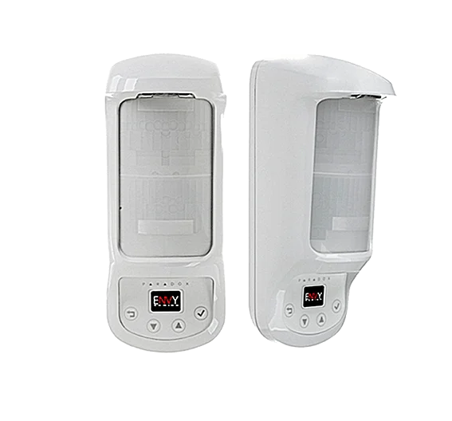
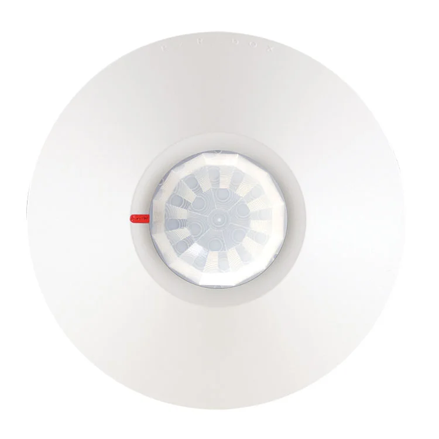

PA-SP4000
Características
Panel de Alarmas 4 Zonas 100% programable, comunicador SPECTRA SP
PA-SP4000
Panel 4 zonas cableadas con doblaje de zonas,
+ Zona de Teclado, soporta hasta 15 teclados
Hasta 32 zonas, 2 particiones.
Soporta expansor de zonas cableadas ZX82 o ZX8SP.
Soporta teclados: TM70,K10H,K10V,K32+,K32LCD,
K32LX compatible con interfaces de PARADOX IP-150
y PCS-250.
1 salida PGM en tarjeta.
Compatible con Receptor inalámbrico RX1/RTX3.
Salida de voltaje 12VDC 450MA
PA-SP5500
 Características
Características
Panel de Alarmas 5 Zonas 100% programable, comunicador SPECTRA SP
PA-SP5500
Panel 5 zonas cableadas con doblaje de zonas
Soporta hasta 15 teclados, hasta 32 zonas, 2
particiones
Soporta hasta 3 expansoras de zonas cableadas
ZX82 o ZX8SP.
Soporta teclados: TM70, K10H, K10V, K32+,
K32LCD, K37, K32LX, compatible con interfases
de PARADOX IP-150 y PCS-250. 2 salida PGM en
tarjeta.
Salida de voltaje 12VDC 700MA
PA-MG5050
 Características
Características
Panel de Alarma Inalámbrico y cableado de 32 Zonas, 100% programable
PA-MG5050
Panel 5 zonas cableadas con doblaje de zonas,
soporta hasta 15 teclados (4 inalámbricos), hasta 32
zonas, 2 particiones
Soporta expansor de zonas cableadas ZX82 o ZX8SP.
Soporta teclados: TM70, K10H, K10V, K32+, K32LCD ,
K37 compatible con interfases de PARADOX IP-150 y
PCS-250.
4 salida PGM en tarjeta. Salida de voltaje 12VDC
700MA
PA-ZX82
 Características
Características
Tarjeta de expansión de 8 zonas Spectra SP MAGELLAN / EVO
PA-ZX82
Expansión de 8 zonas con doblaje zona, soporta solo
EVO. Led de estado para zonas, energía y datos.
Gabinete con mecanismo de bloqueo de cubierta.
ZX8SP sólo compatible con centrales MG y SP.
PA-ZX8SP
Características
Tarjeta de expansión de 8 zonas Spectra SP MAGELLAN / EVO
PA-ZX8SP
Expansión de 8 zonas con doblaje zona, soporta solo
EVO. Led de estado para zonas, energía y datos.
Gabinete con mecanismo de bloqueo de cubierta.
ZX8SP sólo compatible con centrales MG y SP.
PA-K10H
Características
Teclado LED cableado de 10 Zonas horizontales SPECTRA SP MAGELLAN
PA-K10H
1 entrada de zona en teclado. Control de hasta 10
zonas en 2 particiones, 7 Botones de acción de un
toque. 3 alarmas de pánico activables por teclado.
Compatible con Centrales Spectra SP y Magellan.
PA-K32+
Características
Teclado LED cableado de 32 Zonas, sin tamper, elegante diseño
PA-K32+
1 entrada de zona en teclado.
Configuracion de avisos sonoros independientes
por zonas.
7 Botones de acción de un toque. 3 alarmas de
pánico activables por teclado. 32 leds indicadores
de zonas.
Compatible con serie Spectra SP y Magellan
PA-K32LCD+
 Características
Características
Teclado LED cableado de 32 Zonas, sin tamper, elegante diseño
PA-K32LCD+
1 entrada de zona en teclado.
Configuracion de avisos sonoros independientes
por zonas.
7 Botones de acción de un toque. 3 alarmas de
pánico activables por teclado. 32 leds indicadores
de zonas.
Compatible con serie Spectra SP y Magellan
PA-K32LX
 Características
Características
Teclado cableado con pantalla LCD con receptor inalámbrico incorporado
PA-K32LX
Teclado compatible con sistemas SPECTRA.
Pantalla LCD retroiluminada con estado del sistema
en tiempo real.
Compatible con sistema de alarma de hasta 32 zonas
Entrada de zona en teclado para facilitar la instalación
de un detector próximo a este
Conexión a central por bus de 4 hilos
Transceptor incorporado (433 Mhz)
PA-K37
Características
Teclado LCD fijo inalámbrico de 32 zonas
PA-K37
Muestra el estado de las 32 zonas en 2 particiones.
8 botones de acción de un solo toque, 1 entrada de
zona en el teclado.
3 alarmas de pánico activables por teclado.
Transceptor incorporado (433Mhz)
Compatible con MG5050 (v3.22 o superior), la serie
Spectra SP (v3.00 o superior) y RTX3 (v1.42 o superior)
PA-TM70
 Características
Características
Teclado intuitivo touch 7" para centrales PARADOX
PA-TM70
Pantalla táctil de 7”. Control de hasta 192 zonas en
8 particiones.
Actualizable localmente a través de tarjeta micro SD
Poderoso procesador avanzado
Controla hasta 8 salidas PGM. SpotOn Alarm
Locator: 32 planos de piso pueden ser cargados,
ranura para tarjeta de memoria externa Interfaz
intuitiva basada en íconos
Baterias incluidas.
PA-476
Características
Detector de movimiento (PIR) tecnología analógica
PA-476
Procesamiento automático de la señal de pulso, 2
niveles ajustables.
Diseño SMD de alta densidad.
Sensor: bajo nivel de ruido , alta sensibilidad, elemento
doble, PIR Sensor .
Velocidad de detección: 0.2 ~ 7m / sec
Rechazos EMI y RFI extremadamente altos. Switch
Anti- tamper, Relé de estado sólido.
Cobertura: 12m x 110 °.
PA-NV5
 Características
Características
Detector de movimiento (PIR) inmune animales tecnología digital
PA-NV5
Lente híbrida cilíndrico-esférica
Alcance 10×10 m, 102°
Tiempo de inicio de 10 segundos
Selección de procesamiento sencillo o por
impulso automático digital dual (APSP)
Ajuste digital de sensibilidad con 5 niveles
Salida de relé: estado sólido (NC)
Incluido lente para deteccion en angulo 0° PIR
Inmunidad contra pequeñas mascotas 16kg.
PA-DG75
 Características
Características
Detector de movimiento (PIR) Inmune a animales, tecnología digital
PA-DG75
Doble óptica (2 elementos duales opuestos).
PIR inmune animales hasta 40kg.
Ángulo de visión de 90°, 11m x 11m.
PA-525DM
 Características
Características
Detector de movimiento (PIR) doble tecnología, tecnología digital
PA-525DM
PIR Dual (microondas infrarrojo ) próximidad dinámi-
ca permite la detección de movimientos cercanos
(menos de 0.75m) dentro del rango.
Ángulo de visión de 90°, 12m x 12m.
PA-DG85
 Características
Características
Detector de movimiento (PIR) exterior, tecnología digital con optica doble
PA-DG85
Tecnología digital, Doble óptica (2 elementos duales
opuestos).
Lente protegido contra rayos UV.
Carcasa resistente a golpes.
Rango de temperatura soportados de -35°C a 50°C.
Ángulo de visión de 90°, 11m x 11m.
PA-NVX80

Características
Detector de movimiento (PIR) exterior, tecnología digital con optica doble
Detector de movimiento (PIR) exterior inmune animales tecnología digital
PA-NVX80
8 canales de detección: 4 canales de infrarrojo de
barrido frontal, 2 canales microondas y 2 detectores
de arrastre dedicados.
Tecnologiía de antienmascaramiento y SeeTrue.
Sensor direccionable al usar con Panel EVO 192
PA-NV780MX
 Características
Características
Detector de movimiento (PIR) para exterior, visión lateral (doble lado)
PA-NV780MX
Exterior de Visión lateral dual con 4 sensores y
ANTIMASKING, detección ajustable vertical y horizon-
tal entre 3 y 12 metros.
Sensor direccionable al usar en panel EVO 192
PA-DG467

Características
Detector de movimiento (PIR) para techo, cobertura 360° tecnología digital
PA-DG467
Doble óptica (2 elementos duales opuestos). 7m x6
mts a 2,4m de altura, 11m x 6m a 3,7m de alturA,
angulo de deteccion 360°.
PA-PMD2P
Características
Detector de movimiento (PIR) inalámbrico, tecnología digital con optica doble
PA-PMD2P
Sensor doble elemento,
PIR inmune animales hasta 18kg.
Rango inalambrico de 35m a 70m según
receptor.
Angulo de visión de 88,5°, haz central de 11m x
11m y hasta 15m.
Incluye baterias..
PA-PMD85
Características
Detector de movimiento (PIR) inalámbrico exterior, tecnología dig. optica doble
PA-PMD85
Doble óptica (2 elementos duales opuestos).
Lente protegido contra rayos UV. Carcasa
resistente a golpes
Rango inalambrico de 35m a 70m según
receptor.
Pir inmune animales hasta 18kg. Angulo de
visión de 88,5°, haz central de 11m x 11m y
hasta 15m. Incluye baterias.
PA-DCTXP2
 Características
Características
Contacto magnetico inalámbrico 2 zonas
PA-DCTXP2
Capacidad de conexión de 2 zonas( zona 1: alta
sensibilidad directa en magnetico, Zona 2: entrada
N.O./N.C.
Rango inalámbrico en ambiente residencial: 70m con
MG5050, RTX3, K32LX.
Interruptor antisabotaje, color blanco. Incluye
baterias.
Compatible con RTX3, RX1, MG5050, K32LX
PA-DCT2
 Características
Características
Contacto magnetico inalámbrico 2 zonas
PA-DCT2
Capacidad de conexión de 2 zonas( zona 1: alta
sensibilidad directa en magnetico, Zona 2: entrada
N.O./N.C.
Rango inalámbrico en ambiente residencial: 70m con
MG5050, RTX3, K32LX.
Interruptor antisabotaje, color blanco. Incluye
baterias.
Compatible con RTX3, RX1, MG5050, K32LX
PA-REM15
 Características
Características
Control remoto con botones retroiluminados
PA-REM15
Delgado y Ergonómico, resistente a la humedad.
Rango inalámbrico en ambiente residencial. 60m con
RTX3. Realiza hasta 5 acciones diferentes, incluye
baterias.
PA-REM101
 Características
Características
Control remoto con botones retroiluminados
PA-REM101
Control Remoto Pánico / Emergencia
Resistente al agua, Permite al usuario enviar
una señal de pánico a la estación de monitoreo
PA-RTX3
 Características
Características
Módulo expansor inalámbrico 32 zonas
PA-RTX3
Máximo 999 controles inalámbricos con EVO, máximo
32 controles con linea SP.
3 salidas programables. 32 Zonas inalámbricas
Soporta sirena inalámbrica SR130.
Soporta 2 RPT1, 1 Salida PGM tipo RELAY
PA-RPT1
 Características
Características
Módulo repetidor inalámbrico
PA-RPT1
Acepta todos los transmisores Magellan
(incluídos los transmisores bidireccionales).
Entrada universal para transmisor (N.A. /N.C.).
Compatible serie MG, serie SP con PA-RTX3.
Alcance inalámbrico típico en un ambiente residen-
cial: 75m a 433MHz .
Requiere Transformador 16,5v y Bateria 12 VDC
PA-RX1
 Características
Características
Módulo repetidor inalámbrico
Módulo Receptor inalámbrico para 32 zonas
PA-RX1
Controla hasta 32 zonas Inalámbricas, y hasta 32
controles remotos
Conexión bus de 4 cables
Supervisión de congestión RF
Luces LED de confirmación (Bus/RX)
2 salidas programables
Indicador de fuerza de señal del transmisor
Compatible con paneles SP
PA-SR130
Características
Sirena exterior inalámbrica con luz estrobo
PA-SR130
2,5 horas de funcionamiento en alarma, rápida
respuesta a las alarmas, supervisada por el panel de
alarma.
Rango inalámbrico en ambiente residencial: 70m con
MG5050 o RTX3.
PA-PCS250
 Características
Características
Módulo comunicador GSM/GPRS
PA-PCS250
Reporte instantáneo de pérdida de supervisión. Panel
de alarmas fácil armado y desarmado por SMS.
Reporte de alarmas a travéz de SMS a 16 celulares.
Soporta 2 tarjetas SIM, interruptor antisabotaje
Soporta modulo voz VDMP3
PA-IP150
Características
Módulo de internet
PA-IP150
2 entradas/salidas controladas por App Celular Insite Gold.
Información de reportesen la app, muestra los últimos
32 eventos.
Vea, en tiempo real, el estado de todas las zonas y
particiones a través de la Insite Gold
Compatible con toda la serie de paneles PARADOX
(SP, MG y EVO).
Envía notificaciones Push. Muy bajo consumo de
ancho de banda.Conexión a la nube (P2P). IP Fija
envía correos electrónicos.
PA-VDMP3
Características
Módulo de voz externo
PA-VDMP3
Enlace de activación con voz con la central y puede ser
programado para llamar a uno o más números de
teléfono si ocurre una alarma.
El VDMP3 básicamente convierte cualquier teléfono
exterior en un teclado.
Compatible con serie SP, MG, EVO192.
Hasta 8 números telefónicos para reportar alarmas de
robo, pánico o incendio. Mensajes de voz pregrabados.
PA-EVO192
 Características
Características
Panel de alarmas 8 zonas | 100% programable | con comunicador digital
PA-EVO192
8 zonas cableadas con doblaje de zonas de 8 a 16
zonas cableadas, + zona de teclado
Soporta hasta 254 modulos bus de expansion. Hasta
192 zonas, 8 particiones
Soporta teclados: TM70, K641+, K641LX , compatible
con interfases de PARADOX IP-150 y PCS-250.
5 salida PGM en tarjeta. Compatible con Receptor
inalambrico RTX3. Salida de voltaje 12VDC 700MA
PA-DG457
Características
Detector de ruptura de cristal direccionable
PA-DG457
2 modos de operación (asignable para EVO y de
operación convencional por relé)..
Modo de prueba remota cuando se usa el TestTrek V2
Análisis completo de espectro de audio y de infrasonido.
Análisis de impacto y de onda de choque.
Alta inmunidad a señales RFI y EMI.
Sensibilidad ajustable: Cubre hasta 9m (alto) y hasta
4.5m (bajo).
Direccionable al usar con panel EVO 192